STOCK FORECASTING / NVDA01 · Giới thiệu đề tàiThiết kế nghiên cứu
DEEP LEARNING · TIME-SERIES REGRESSION
Stock Price Forecasting For Deep Learning
Dự báo giá cổ phiếu, thực nghiệm trên NVIDIA (NVDA).
Từ 60 phiên Close đến dự báo 5 phiên tiếp theo. Kiểm chứng cho người phân tích dữ liệu cổ phiếu.

60 phiên lịch sửMô hình học sâu5 giá dự báo
Minh họa khái niệm · Không biểu diễn giá NVDA thực
BÀI TOÁNHồi quy chuỗi thời gian
MÔ HÌNH HỌC SÂULSTM · 1D-CNN
MÔ HÌNH ĐỐI CHỨNGLinear Regression · ARIMA
Kính chào thầy cô và các bạn. Đề tài nghiên cứu dự báo giá cổ phiếu bằng học sâu, thực nghiệm trên NVIDIA. Đây là bài toán hồi quy chuỗi thời gian, phục vụ tham khảo diễn biến giá cho người phân tích. Nhóm so sánh LSTM và CNN một chiều với Linear Regression và ARIMA. Nội dung hôm nay trình bày thiết kế; chưa có kết quả huấn luyện.
DEFINE §2–4; DESCRIPTION mục 3–6; human duyệt tên và bố cục mới.
Trước tiên, dữ liệu nào sẽ được sử dụng?
STOCK FORECASTING / NVDA02 · Data UnderstandingThiết kế nghiên cứu
Nguồn dữ liệu và đặc điểm bộ dữ liệu
Phân biệt dữ liệu thu thập, feature được chọn và chất lượng cần kiểm tra.
Dữ liệu dự kiến từ Yahoo Finance qua yfinance, phục vụ nghiên cứu dự báo giá Close NVDA.
Thuộc tính
Phạm vi dự kiến
Cổ phiếu
NVDA · NVIDIA · NASDAQ
Thời gian
5 năm gần nhất lấy được
Tần suất
1d · Một dòng / phiên giao dịch
Kích thước
Số dòng, số cột và ngày đầu/cuối: chờ snapshot
Đơn vị
USD
DỮ LIỆU THÔ → FEATURE ĐƯỢC CHỌN
DateOpenHighLowCloseAdj CloseVolume
OHLCV: giá mở, cao, thấp, đóng cửa và khối lượng. Lưu thêm corporate actions để đối chiếu.
↓ Chọn feature cơ sở
Close lịch sửF = 1 · Chưa tự thêm chỉ báo
auto_adjust=False: không tự điều chỉnh OHLC theo Adj Close. Close Yahoo vẫn điều chỉnh chia tách.
CẦN KIỂM TRAMissingDuplicateOutlierCalendar gapsChưa có findings thực
Nguồn dự kiến là Yahoo Finance thông qua yfinance. Mã nghiên cứu là NVDA trên NASDAQ, đơn vị USD, lấy năm năm gần nhất có thể thu thập. Interval một ngày nghĩa là một dòng mỗi phiên giao dịch, không phải mọi ngày lịch. Bảng bên trái nêu phạm vi đã chốt; số dòng cùng ngày đầu và cuối chỉ được điền sau khi có snapshot. OHLCV là giá mở cửa, cao nhất, thấp nhất, đóng cửa và khối lượng. Dữ liệu có nhiều cột nhưng feature cơ sở chỉ là lịch sử Close. Auto adjust bằng false nghĩa là không yêu cầu yfinance tự điều chỉnh các cột OHLC theo Adj Close; Close Yahoo vẫn có điều chỉnh chia tách. Missing, trùng phiên và outlier hiện là danh sách cần kiểm tra, chưa phải lỗi đã phát hiện.
Gọi c tại t là giá đóng cửa của phiên t. Tại origin t, mô hình nhận sáu mươi giá đã quan sát, từ t trừ năm mươi chín đến t. Đó là vector đầu vào x. Hàm dự báo có tham số theta trả về chuỗi giá ước lượng; nhãn cần đối chiếu là năm Close thực tế sau origin. Vì target là giá trị liên tục, đây là hồi quy, không phải phân loại tăng giảm. Trên timeline, vùng lịch sử và vùng tương lai được tách bằng biên t. Khi gom thành batch, LSTM nhận B, sáu mươi, một; CNN đổi chiều để convolve theo thời gian. B là số mẫu, còn một là số feature Close. Ngoài bài toán năm bước, nhóm còn học model một bước để dùng cho recursive.
DEFINE §4.1–4.3; DESIGN §5.8; walkthrough §1.1.
Hợp đồng đầu vào và target này quyết định các bước chuẩn bị dữ liệu.
STOCK FORECASTING / NVDA04 · Data PreparationThiết kế nghiên cứu
Chuẩn bị dữ liệu và kiểm soát rò rỉ thông tin
Chia và khóa biên ngày trước EDA; mọi phép học thống kê chỉ dựa trên train.
01Thu thập / cacheRaw snapshot
→
02Kiểm tối thiểuSchema · ngày · thứ tự
→
03Khóa splitBiên ngày trước EDA
TRAIN · 70%VAL · 15%TEST · 15%
04EDA trên trainFindings chất lượng
→
05Human reviewDuyệt policy
→
06Clean / featuresÁp policy từng tập
→
07MinMaxScalerFit chỉ trên train
→
08WindowsSinh X, Y
01 / Biên cố định
Cleaning không kéo val/test vào train.
02 / Train-only
Val/test chỉ transform, không fit.
03 / Nhân quả
Không future input; target đúng split.
Trước EDA, nhóm kiểm tối thiểu để đọc đúng schema và trục ngày, rồi chia theo thời gian bảy mươi, mười lăm, mười lăm và khóa biên. EDA chỉ khảo sát train để đề xuất cách xử lý dữ liệu. Những giá trị thiếu, bản ghi trùng hoặc outlier phải được hiển thị cho human xem trước khi chọn policy. Một điểm giá khác thường chưa chắc là lỗi nên không tự động xóa theo IQR. Sau khi được duyệt, policy được áp dụng cho từng tập. Nếu số dòng thay đổi, nhóm giữ nguyên biên ngày và báo lại counts, không chuyển ngày validation sang train để bù tỷ lệ. MinMaxScaler chỉ fit train, sau đó transform validation và test. Cuối cùng tạo windows theo hợp đồng sáu mươi đến năm. Mọi target phải nằm trọn trong tập đích và mọi feature phải có sẵn tại origin. Cách xử lý window qua khoảng thiếu phiên cần dựa trên EDA và được duyệt.
DEFINE §4.2–4.3; DESIGN §4; walkthrough §2.1–2.2.
Các windows đó trở thành đầu vào chung cho hai mạng học sâu.
STOCK FORECASTING / NVDA05 · Model DesignThiết kế nghiên cứu
Thiết kế mô hình LSTM và 1D-CNN
Hai cách xử lý cùng chuỗi Close; so sánh bằng thực nghiệm, chưa kết luận mô hình thắng.
LSTMPhụ thuộc theo trình tự
INPUT(B,60,1)60 Close
→
ENCODER2 lớp LSTMhidden64 · dropout0.2
→
READOUTBước cuốiLast time step
→
OUTPUTLinear(H)(B,H)
1D-CNNMẫu cục bộ theo thời gian
BLOCK 1Conv 1 → 64BN · ReLU · MaxPool2
→
BLOCK 2Conv 64 → 32BN · ReLU
→
POOLINGAdaptiveAvgPool1Flatten
→
OUTPUTDropout → Linearp=0.2 · (B,H)
Input đổi trục (B,1,60) · Hai Conv: kernel3 / padding1 · Số kênh cơ sở C=64 → C/2=32.
RECURSIVE · REUSE MODEL H=1
Window→ŷ₁→Cập nhật window→ŷ₂ … ŷ₅
Đưa prediction trở lại input; không đọc actual tương lai.
DIRECT MULTI-OUTPUT · MODEL H=5
Window→Mô hình→[ŷ₁, ŷ₂, ŷ₃, ŷ₄, ŷ₅]
Trả toàn bộ 5 bước trong một lần chạy.
LSTM xử lý các quan sát theo trình tự và duy trì trạng thái giữa các bước. Thiết kế cơ sở dùng hai lớp với hidden size sáu mươi tư và dropout không phẩy hai. Output tại bước cuối đi qua lớp linear để tạo một hoặc năm giá. CNN một chiều áp bộ lọc dọc chiều thời gian để học các mẫu cục bộ. Block đầu có convolution, BatchNorm, ReLU rồi MaxPool. Block thứ hai cũng có BatchNorm và ReLU. Sau đó Adaptive Average Pooling, Flatten, Dropout và Linear tạo đầu ra. Kernel bằng ba, padding bằng một; số kênh cơ sở là sáu mươi tư rồi ba mươi hai. Phần dưới mô tả hai chiến lược: recursive dùng model một bước, lấy giá dự báo đưa vào cửa sổ rồi dự báo tiếp. Direct multi-output trả cả năm giá trong một lần. Recursive có thể truyền sai số qua các bước; direct gắn với horizon huấn luyện. Chưa có bằng chứng để nói mạng hoặc chiến lược nào tốt hơn.
RAW SNAPSHOTdata/raw/RUN ARTIFACTSoutputs/runs/<run_id>/Mũi tên biểu diễn luồng dữ liệu, không phải quan hệ import.
Sơ đồ này mô tả kiến trúc hệ thống, khác với các lớp bên trong mạng vừa trình bày. Nhóm thiết kế pipeline phân lớp, tách trách nhiệm và giao tiếp qua interface hoặc artifact; áp dụng các nguyên tắc phù hợp của Clean Architecture. DESIGN có sáu lớp. Presentation gồm Notebook và pipeline điều phối, không chứa toàn bộ thuật toán. Data xử lý nguồn, split và preprocessing. Modeling gồm kiến trúc và huấn luyện. Inference dùng model đã chọn để tạo dự báo; Evaluation đọc dự báo cùng actual để tính chỉ số và biểu đồ. Foundation hỗ trợ xuyên suốt bằng cấu hình, seed, IO và thông tin truy vết. Mũi tên giữa các lớp có nhãn đầu ra cụ thể: windows, checkpoint kèm scaler, prediction rồi metrics. Đây là luồng dữ liệu, không phải sơ đồ import. Evaluation không cần import trainer hay model để đọc prediction CSV. Raw snapshot và artifacts theo run giúp truy ngược kết quả về dữ liệu và cấu hình. Đây là kiến trúc mục tiêu, chưa phải hệ thống ML đã chạy.
DESIGN §1.2–1.5; §4; §5.3.
Từ các lớp lớn, ta xác định module cụ thể đảm nhận từng công việc.
STOCK FORECASTING / NVDA07 · Implementation ModulesThiết kế nghiên cứu
Thiết kế module và luồng thực thi
Mỗi module nhận dữ liệu tường minh và xuất artifact cho bước kế tiếp.
Điều phối:src/pipeline.pysplit → EDA → human review → cleaningTiện ích chung: src/utils/ + config/
Hiện có: khung package / README / config. Cần triển khai: các module thuật toán và tests trong sơ đồ.
Tại cấp module, datasets nhận request và raw data, khóa split trước EDA rồi tạo windows cùng scaler và manifest. EDA và cleaning không gọi qua lại: pipeline truyền train cho EDA, dừng human review rồi truyền policy được duyệt cho cleaning. Models định nghĩa mạng và baseline; training quản lý vòng học, validation, tuning và checkpoint. Predict nhận lịch sử tới origin cùng model/scaler để tạo prediction CSV. Evaluation căn chỉnh prediction với actual, tính metrics và xuất biểu đồ. Các tên hàm trên sơ đồ là hợp đồng thiết kế trong DESIGN, không phải bằng chứng code đã tồn tại. Hiện src chỉ có initializer và README module. Điểm cần xây dựng tiếp là các implementation và tests cho cutoff, shapes, xử lý input sai, save/load và tính metrics. Notebook sẽ gọi chung pipeline thay vì viết lại logic.
Inverse scaling trước metrics · Từng bước và gộp M=N×H. MSE USD² chi tiết; bổ sung MAPE / R² / DA.
MỤC TIÊU CẦN ĐẠTMAPE < 5% · R² > 0,85 · DA > 55% · DL vượt baseline. Mục tiêu nghiên cứu — chưa phải kết quả thực nghiệm.
Ma trận thực nghiệm gồm hai họ mạng nhân hai đầu ra: single-step và direct năm bước. Mỗi ô là mười trial Optuna, tổng tối đa bốn mươi. Recursive dùng lại model single-step. Huấn luyện dùng AdamW, objective MSE scaled, tối đa năm mươi epoch với early stopping patience mười. Validation chọn cấu hình và checkpoint; chỉ sau khi khóa lựa chọn mới mở test. Hai baseline là Linear Regression và ARIMA A. LR nhìn cửa sổ sáu mươi Close; ARIMA fit toàn train với order năm, một, không và không drift. Khác biệt lịch sử này cần công bố. Rolling-origin dự báo năm bước tại t; sang t cộng một mới được thêm actual vừa xuất hiện. ARIMA chỉ cập nhật trạng thái bằng refit false, không học lại tham số. Trước metric, giá phải inverse-scale về USD. MAE là độ lệch tuyệt đối trung bình; RMSE nhạy hơn với lỗi lớn. MSE giá gốc dùng USD bình phương, khác loss scaled. Báo từng bước và tổng hợp; chưa có kết quả để xác định model thắng. Mục tiêu nghiên cứu là MAPE dưới năm phần trăm, R bình phương trên không phẩy tám mươi lăm, DA trên năm mươi lăm phần trăm và Deep Learning vượt baseline. Đây là mục tiêu cần kiểm chứng, chưa phải kết quả thực nghiệm. Nếu không đạt hoặc thua baseline, nhóm vẫn báo cáo kết quả thực tế và phân tích nguyên nhân.
Cả hai giai đoạn đều bắt buộc; Core làm trước. Tài liệu/config đã có; ML cần triển khai, kiểm chứng.
RỦI RO → HƯỚNG XỬ LÝ
01 · Leakage
Sai số tốt giả → khóa split, scaler train-only, kiểm cutoff.
02 · Overfit
Tổng quát hóa kém → validation, early stopping, baseline.
03 · API / Regime shift
Dữ liệu đổi hoặc mẫu cũ hết phù hợp → snapshot/cache, phân tích giới hạn.
Các công việc được gắn với sản phẩm bàn giao cụ thể. Khảo sát nghiệp vụ và chốt phạm vi tạo phiếu đăng ký cùng tình huống sử dụng. Chuẩn bị dữ liệu phải có snapshot hoặc mẫu thật và mô tả trường. Thiết kế đánh giá tạo kịch bản test cùng giao thức so sánh. Baseline cần tạo kết quả làm mốc. Core được triển khai trước, gồm dữ liệu, LSTM single-step, LR và ARIMA, Optuna, đánh giá và Notebook. Required Extensions triển khai sau, gồm dự báo năm phiên bằng Recursive và Direct cùng so sánh 1D-CNN. Cả hai giai đoạn đều bắt buộc hoàn thành. Hiện tài liệu và config đã có nhưng chưa có evidence hoàn thành các đầu việc ML. Leakage có thể làm sai số tốt giả nên cần kiểm split và scaler. Overfit được theo dõi qua validation và early stopping. API lỗi hoặc dữ liệu bị sửa cần snapshot có hash; biến động chế độ thị trường cần được phân tích như giới hạn mô hình.
DESCRIPTION mục10 và bảng Công việc/Kết quả; DESIGN §6–7; inventory outputs/.
Cuối cùng, đề tài đã xác lập được gì và còn cần chứng minh gì?
STOCK FORECASTING / NVDA10 · ConclusionThiết kế nghiên cứu
Kết luận và định hướng triển khai
Giá trị nghiên cứu nằm ở dự báo đi cùng một quy trình kiểm chứng truy vết được.
01
Đã xác lập
NVDA Close · 60 → 1/5
LSTM / 1D-CNN
LR / ARIMA
Giao thức đánh giá
02
Cần chứng minh
Sai số so với baseline
Recursive so với Direct
Runtime và độ ổn định
Giới hạn tổng quát hóa
03
Sản phẩm hướng tới
Pipeline + Notebook
Checkpoint + scaler
Predictions + metrics
Biểu đồ / phân tích lỗi
TIẾP THEOSnapshot→EDA / Human review→Code / Tests→Experiments
Dự báo cần được đánh giá trên dữ liệu chưa dùng để lựa chọn mô hình.
Một ticker, dữ liệu lịch sử; chưa chứng minh hiệu quả đầu tư.
Kết lại, dự án đặt một bài toán cụ thể: dùng lịch sử Close NVDA để dự báo giá nhiều phiên và kiểm chứng LSTM cùng CNN so với Linear Regression, ARIMA. Những gì đã xác lập là hợp đồng dữ liệu, kiến trúc, ngân sách và giao thức đánh giá. Những điều còn phải chứng minh là sai số thực tế, khác biệt recursive với direct, thời gian chạy và giới hạn tổng quát hóa. Sản phẩm hướng tới gồm pipeline, Notebook, checkpoint đi kèm scaler cùng predictions và metrics truy vết được. Bước tiếp theo là lấy snapshot thật, EDA và duyệt policy rồi triển khai, kiểm thử và chạy thí nghiệm. Chỉ khi có kết quả trên dữ liệu chưa dùng để lựa chọn mô hình mới có thể bàn về cải thiện. Một ticker và một giai đoạn lịch sử không đại diện mọi thị trường. Đây không phải bằng chứng hiệu quả đầu tư. Xin cảm ơn thầy cô và các bạn.
DEFINE §4.4, §7.6–7.7; DESIGN §6; walkthrough §3; human review.